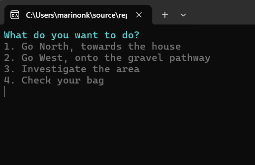
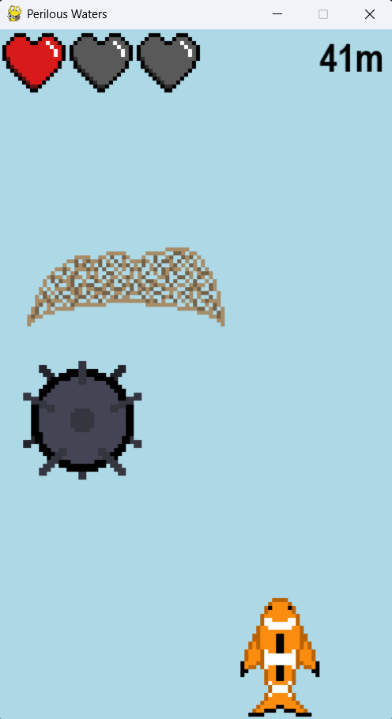
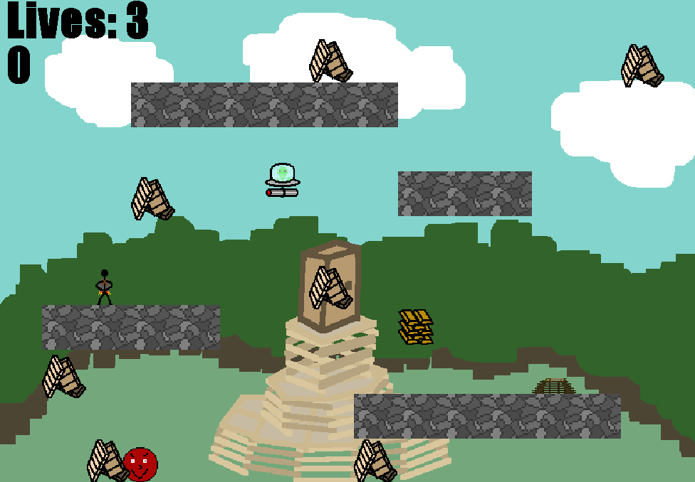

Elemental Escape - GDScript
Currently in development using GDScript and the Godot engine, Elemental Escape is a puzzle-platformer where you play as a mage using elemental spells to escape a dungeon.

Developed in C# using VisualStudio2022, Adventure is a text-based interactive fiction game and my first personal programming project.
Developed in Python using the Pygame library, Perilous Waters is our group's take on the endless runner—or in this case swimmer—genre. During development, we implemented game elements such as dynamic score tracking, player power-ups, and start screen UI.
Developed in Java as part of a three-person team, Rōs Bonfīr is a Rose-Hulman-themed recreation of the classic arcade game Jetpac. During development, we gained experience implementing common game elements and mechanics such as entity collisions, level loading, and win/loss conditions.
Currently in development using GDScript and the Godot engine, Elemental Escape is a puzzle-platformer where you play as a mage using elemental spells to escape a dungeon.